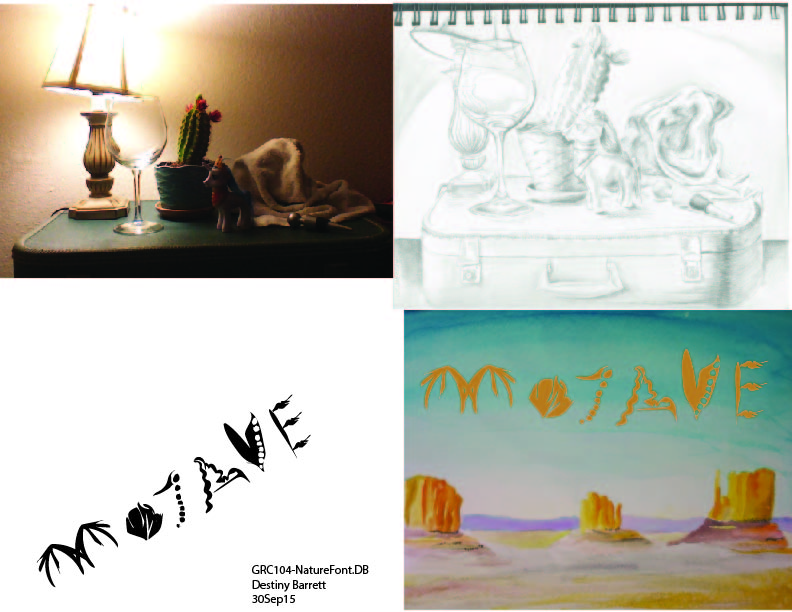

Welcome, Explore my Projects
FrontEnd Development, Graphic Design,
There is a variety of mediums and subjects. Monochromatic, to colour theory and cadmiums, wet, dry, on or off paper, still life, real life, and authentic imagination. You can see my final work, as well as the sketches and thought processes that brought me there.
This is a collection of one page sites that I created. If you are interested in my tech insights, and coding capabilities, and/or designs click on.
Visit my book review site.
This is an Amazon Affiliate Marketing site.
All of these reviews are written for / about books that I genuinely read and processed.
This includes summary as well as analysis.
I enjoy many genres of book, fiction, or non-fiction.
I admire peoples' ideas, like to share my own, and truly appreciate the way people can organize their larger ideas and share them, similar to the way we use the Internet.
Perhaps the library is the back up, in case of Google-apocalypse.
or Corona Virus